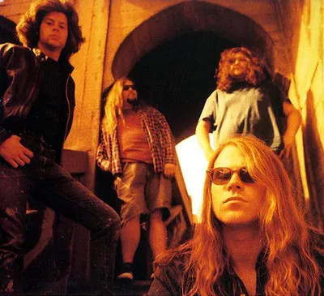

Quem é Mark Lanegan?

Mark Lanegan era um cantor e compositor ao estilo das bandas de Seattle, aparecendo ao final dos anos 80 e início dos anos 90, nos primórdios do grunge. Nasceu em Ellensburg, cidade de Washington.
Seu surgimento musical veio com a banda Screaming Trees, pensando em ser baterista, mas logo seus amigos de banda viram que seu lugar era no vocal.
É notável o porquê de terem colocado ele como vocalista. Seu timbre grave, forte e soturno combinam muito com as letras, ainda mais tratando-se desse estilo.